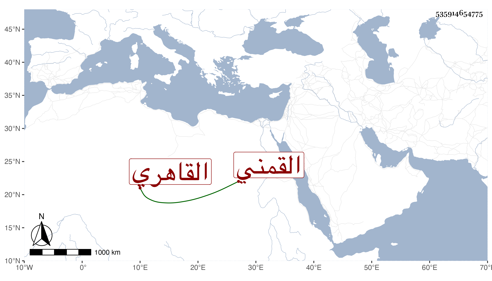

0902Sakhawi.DawLamic.ITO20230111-ara1.EIS1600.535914654775
Biography ID: 535914654775
1011
علي بن محمد بن خالد بن عبد الله بن علي بن عز الدين نور الدين القمني ثم القاهري نزيل الصالحية والنائب في إمامة شافعيتها وأحد العدول تجاهها بل صار الآن خير جماعتها ويعرف في بلده بابن خلد . رافق في الشهادة الأكابر ثم لتقدمه في السن الأصاغر وهو ممن سمع على شيخنا وغيره ونسخ بخطه أشياء وفيه خير وستر وسكون مات .
